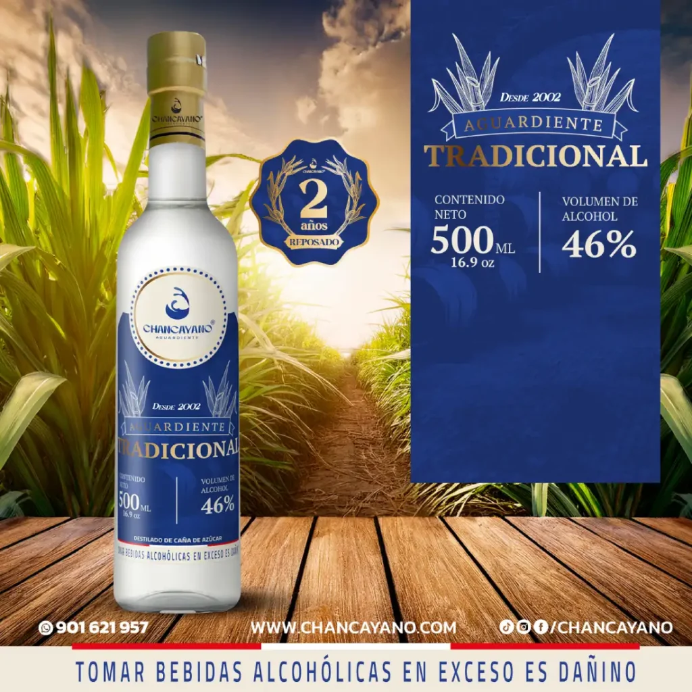
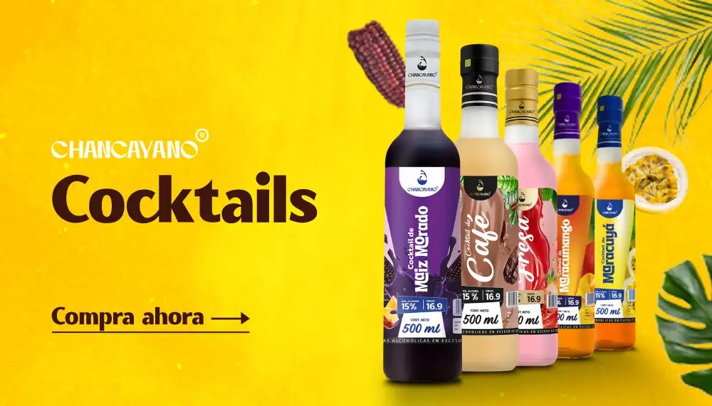
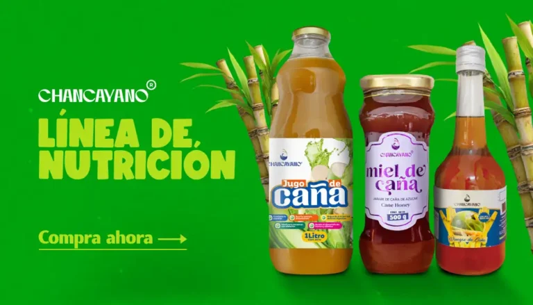

2002Elaborado desde
56 % vol.Cogollo Premium
Cogollo Premiumde Chancay Baños
Aguardiente artesanal de caña de azúcar, destilado en Santa Cruz, Cajamarca. También hay destilados, macerados y cocktails.
Venta solo a mayores de 18 años. Tomar bebidas alcohólicas en exceso es dañino.
Nuestras líneas
Cinco líneas y una edición especial, de la caña a la copa. Cada una abre su catálogo en la tienda.

Premium
Aguardiente Cogollo, el más alto de la casa.
- Grado
- 56 % vol.
- 500 ml
- S/ 70.00
- 50 ml
- S/ 10.00

Destilados
Aguardiente tradicional de caña, también reposado dos años.
- Grado
- 46 % vol.
- Formatos
- 187 y 500 ml
- Desde
- S/ 10.00

Macerados
Macerado de quina en varias presentaciones.
Ver en la tienda
Cocktails
Fresa, café, maíz morado, maracumango y maracuyá.
Ver en la tienda
Nutrición
Jugo y miel de caña.
Ver en la tiendaEdición especial
Cocktail de maracumango, Carnaval de Cajamarca. 500 ml, 15 % vol. Desde S/ 35.00.
Ver edición especialAguardientes y presentaciones
Tradicional y Añejo 2 años, en 187 y 500 ml. Elige la botella con las flechas para ver su precio.


Caña de Chancay Baños, Santa Cruz
Chancayano elabora su aguardiente con caña de azúcar de Chancay Baños, en la provincia de Santa Cruz, Cajamarca.
Cocktails de la casa
Cinco sabores en 187 ml y 500 ml. Elige el formato y el precio se actualiza con la ficha.


Tu Chancayano, en la tienda
Pide en la tienda o escríbenos por WhatsApp.